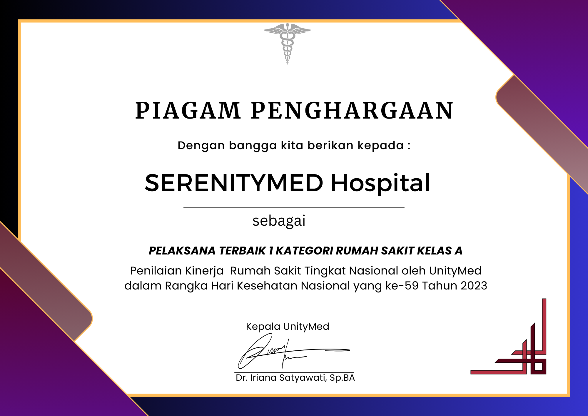
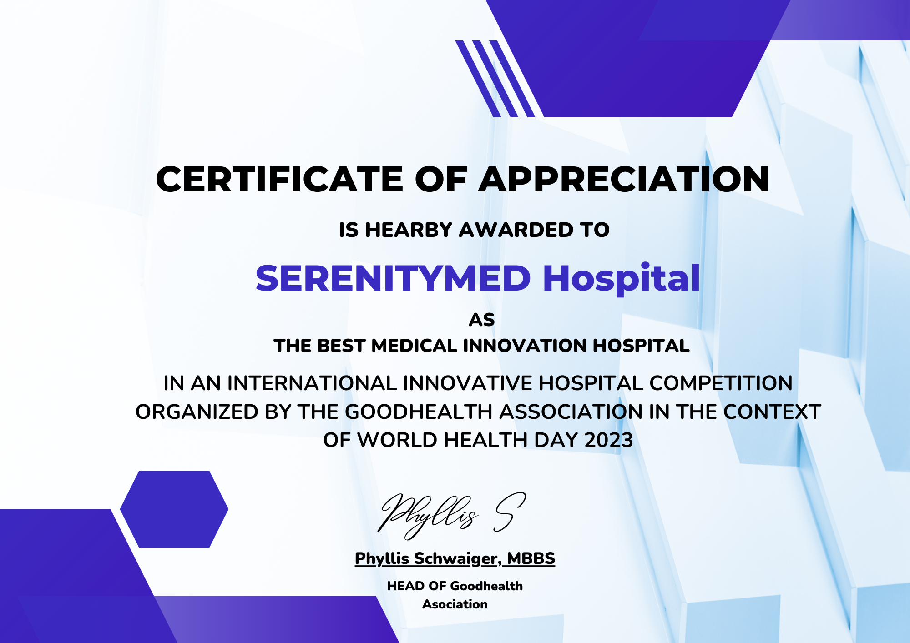
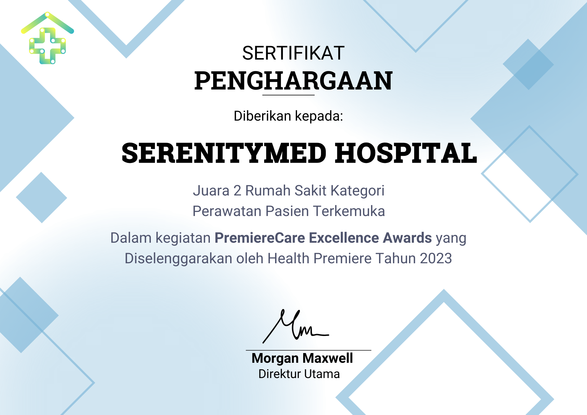

Kesehatan Anda, Prioritas Kami
Dedikasi untuk Memberdayakan Anda
Hidup Sehat dan Bahagia
Temukan Dokter dan Jadwal Konsultasi
“Sehat itu bukan suatu kemewahan. Sehat itu murah, tetapi menjadi mahal ketika sehat telah berubah menjadi sakit.”
Kesehatan anda adalah suatu prioritas bagi kami. Temukan dokter terbaik kami dan booking jadwal konsultasi dengan mereka hanya dengan klik tombol dibawah
Find and Schedule Now
Berita Terbaru Tentang Kesehatan untuk Anda


Penghargaan yang Diterima SerenityMed Hospital



Janis Layanan SerenityMed Hospital untuk Anda